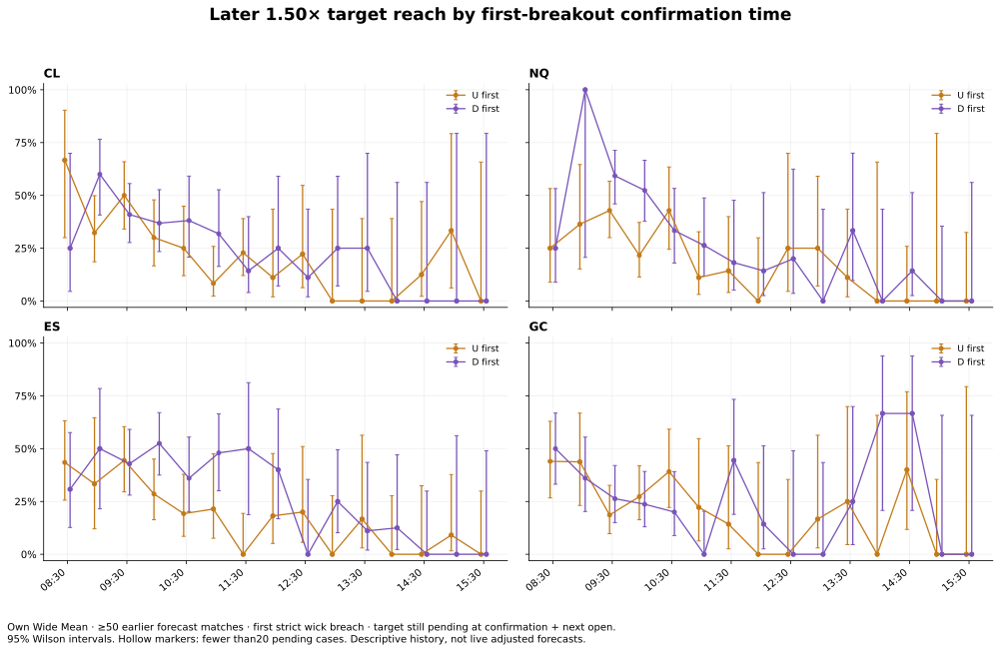
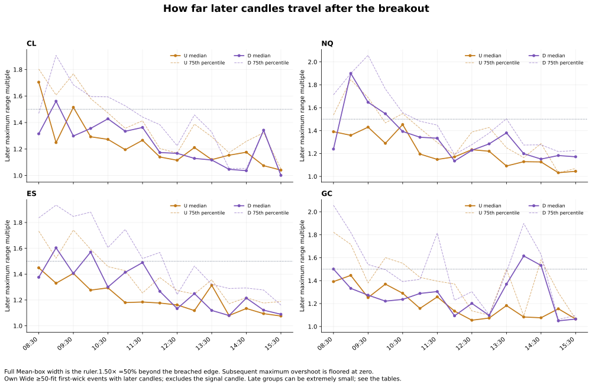
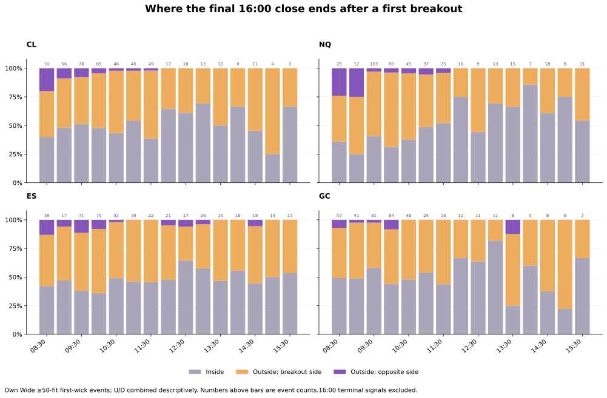
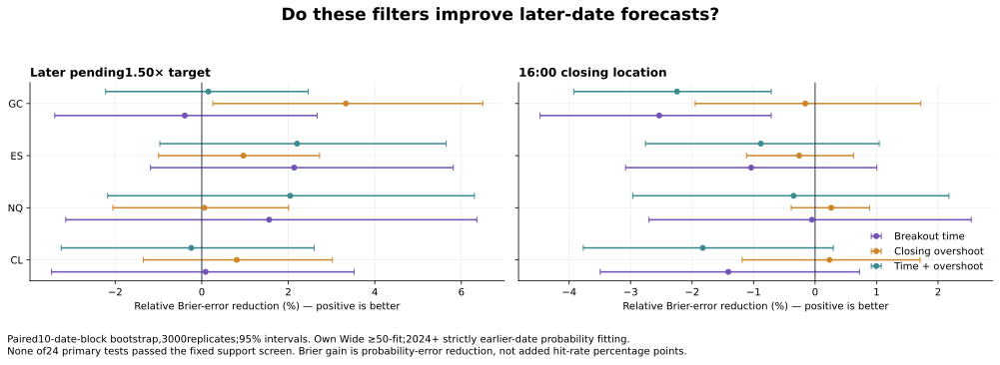

SESSIONPATH RESEARCH · WAN HO.LUI ·2 NOVEMBER 2026
When NY breaks the box: timing, further extension and the 16:00 close
CL · NQ · ES · Gold. Ordinary Mean SessionPath 08:30–16:00 boxes, unchanged. First-wick and first-close-outside events are measured separately.
What was measured
Primary view: Own Wide Mean forecasts fitted on at least 50 earlier matched dates. These figures describe the full eligible research history. Later-date forecast scores use smaller samples after the required 50-event probability-model warmup.
| Market | Eligible forecasts | Ordered first breaks | Later 1.50× / pending | 16:00 inside | 16:00 same-side outside | 16:00 opposite-side outside |
|---|---|---|---|---|---|---|
| CL | 598 | 440 | 30.2%132/437 · 95% 26.1%–34.7% | 49.7%218/439 · 95% 45.0%–54.3% | 46.0%202/439 · 95% 41.4%–50.7% | 4.3%19/439 · 95% 2.8%–6.7% |
| NQ | 577 | 429 | 31.0%131/422 · 95% 26.8%–35.6% | 45.0%191/424 · 95% 40.4%–49.8% | 50.2%213/424 · 95% 45.5%–55.0% | 4.7%20/424 · 95% 3.1%–7.2% |
| ES | 620 | 459 | 29.0%131/452 · 95% 25.0%–33.3% | 45.3%206/455 · 95% 40.8%–49.9% | 49.2%224/455 · 95% 44.7%–53.8% | 5.5%25/455 · 95% 3.7%–8.0% |
| GC | 597 | 419 | 27.1%112/414 · 95% 23.0%–31.5% | 50.5%211/418 · 95% 45.7%–55.2% | 45.9%192/418 · 95% 41.2%–50.7% | 3.6%15/418 · 95% 2.2%–5.8% |
A target touch and an outside final close answer different questions. A day can reach 1.50×, reverse, and finish inside the original box. The target table and final-close table preserve those outcomes separately.



Inspect breakout time and candle size
The table uses completed-candle confirmation time. A candle opening 09:25 confirms 09:30 and belongs to 09:30–09:59. The final 15:55 candle confirms 16:00 and has no future period. “First close outside” may occur later than the first wick breach; choose the event definition you actually observed.
Shaded rows have fewer than 20 pending cases for the selected target. Rates show hits/cases and 95% Wilson intervals. “Pending” excludes any earlier/trigger target touch and a next open already at the target. A zero denominator is unavailable, never 0%.
Time and later extension
| Confirmation block NY | First breaks | Target hit on signal candle | Later target / pending cases | Later maximum: mean / median /75th | Added beyond signal extreme: median |
|---|
Later maximum uses only candles after the signal and floors boundary overshoot at zero:1.00 means no further move beyond that boundary. Added beyond the signal extreme includes zero and is expressed as% of total Mean-box width. The table is a historical description; current time does not turn it into a live remaining-time forecast.
Where the 16:00 close finished
| Confirmation block NY | Final close inside | Outside on breakout side | Outside opposite side | Median final position | Median drift after signal close |
|---|
EOD rates exclude terminal 16:00 signals. For final position,1.00 is the breached boundary and 0.00 is the opposite boundary; values between 0 and 1 are inside. Drift is side-aligned: positive means movement in the breakout direction. EOD is this study’s 16:00 cutoff, not an exchange settlement price.
Closing overshoot groups
Closing overshoot uses the completed close, not the candle’s furthest wick. A close 14% of full width outside is placed in 10–<20%; a close 27% outside is placed in 20–<30%. A wick breach closing inside is its own group.
| Closing overshoot / full width | Events | Later target / pending cases | EOD inside | EOD same-side outside | Median later maximum |
|---|
Did conditioning improve later-date forecasts?
Each candidate is compared with the same baseline, on the same later test events. The baseline already distinguishes U/D and wick-only/close-outside. This isolates the extra contribution of time and closing distance; it is not a direct score of every custom NY forecast produced by the live site. All probability fitting uses strictly earlier dates. Added filters are assessed individually, then together, with fixed 20-case shrinkage toward the baseline.

Pending 1.50× extension
| Market | Added filter | Later test events | Relative Brier reduction | 95% relative-gain interval | Local cells with<20 earlier cases | Assessment |
|---|---|---|---|---|---|---|
| CL | Breakout time | 237 | +0.09% | -3.47% to +3.52% | 95.4% | Tentative |
| CL | Closing overshoot | 237 | +0.81% | -1.35% to +3.02% | 9.3% | Tentative |
| CL | Time + overshoot | 237 | -0.24% | -3.25% to +2.60% | 95.4% | No measured improvement |
| NQ | Breakout time | 222 | +1.56% | -3.14% to +6.36% | 86.9% | Tentative |
| NQ | Closing overshoot | 222 | +0.06% | -2.05% to +2.01% | 6.8% | Tentative |
| NQ | Time + overshoot | 222 | +2.04% | -2.18% to +6.30% | 92.8% | Tentative |
| ES | Breakout time | 252 | +2.14% | -1.18% to +5.81% | 99.2% | Tentative |
| ES | Closing overshoot | 252 | +0.96% | -1.00% to +2.72% | 5.2% | Tentative |
| ES | Time + overshoot | 252 | +2.20% | -0.97% to +5.65% | 99.2% | Tentative |
| GC | Breakout time | 214 | -0.39% | -3.40% to +2.67% | 93.0% | No measured improvement |
| GC | Closing overshoot | 214 | +3.33% | +0.26% to +6.49% | 9.8% | Tentative |
| GC | Time + overshoot | 214 | +0.15% | -2.22% to +2.46% | 93.9% | Tentative |
Final 16:00 closing location
| Market | Added filter | Later test events | Relative Brier reduction | 95% relative-gain interval | Local cells with<20 earlier cases | Assessment |
|---|---|---|---|---|---|---|
| CL | Breakout time | 239 | -1.41% | -3.49% to +0.72% | 95.4% | No measured improvement |
| CL | Closing overshoot | 239 | +0.23% | -1.19% to +1.71% | 9.2% | Tentative |
| CL | Time + overshoot | 239 | -1.83% | -3.77% to +0.30% | 95.4% | No measured improvement |
| NQ | Breakout time | 224 | -0.05% | -2.70% to +2.54% | 86.6% | No measured improvement |
| NQ | Closing overshoot | 224 | +0.26% | -0.39% to +0.89% | 7.6% | Tentative |
| NQ | Time + overshoot | 224 | -0.35% | -2.96% to +2.18% | 92.9% | No measured improvement |
| ES | Breakout time | 255 | -1.04% | -3.08% to +1.00% | 99.2% | No measured improvement |
| ES | Closing overshoot | 255 | -0.26% | -1.12% to +0.63% | 5.1% | No measured improvement |
| ES | Time + overshoot | 255 | -0.88% | -2.76% to +1.04% | 99.2% | No measured improvement |
| GC | Breakout time | 218 | -2.53% | -4.47% to -0.71% | 93.1% | No measured improvement |
| GC | Closing overshoot | 218 | -0.16% | -1.95% to +1.72% | 10.6% | No measured improvement |
| GC | Time + overshoot | 218 | -2.24% | -3.92% to -0.71% | 94.0% | No measured improvement |
A positive relative Brier reduction means less squared probability error. It is not extra percentage points added to a hit rate. None of the 24 tests passed the fixed combined requirements for uncertainty, multiple testing and yearly consistency. This does not prove time has no influence; the evidence is insufficient to treat these particular adjusted rates as a proven upgrade.
Why the forecast-test sample is smaller
The full descriptive history includes every eligible first break with at least 50 earlier dates fitting its original box. A probability prediction additionally needs 50 strictly earlier outcome-eligible events with the same side and wick/close type, and evaluation begins 2024. That leaves 237 CL,222 NQ,252 ES and 214 GC pending 1.50× test events. The broader “at least 1” and other-method sensitivities are saved separately; they are not independent confirmations because their dates overlap.
Definitions and safeguards
Range ruler: W=H−L. Upward target=L+mW; downward=H−mW. For an 89–91 box,1.50× is 92.00 upward or 88.00 downward. It is 50% beyond the boundary.
First wick breach: strict high above H or low below L. Equality is not a breach. If both first breaches occur in the same candle, first direction is unknown and is excluded from side-dependent analysis. First close outside is a separate alternative population.
Pending target: target untouched on every candle through the signal and also untouched at the next opening price, with at least one later candle. Only later wick touches count as future hits. For first-close-outside events, an earlier wick may already have reached the target.
Final close: close of the 15:55–16:00 candle. The 16:00 opening candle is excluded. Terminal 16:00 observations are retained in the ledger but excluded from future predictions.
Earlier-only boxes: historical Mean widths were reconstructed from their saved cohorts, all strictly before each forecast date. No box was widened or narrowed for this test. Sources use explicit delivery contracts and the existing frozen ten-day AVR conventions.
Testing: Own Wide≥50-fit first-wick events are primary. Probability evaluation begins 2024 with 50 earlier side/type outcome events. Binary Brier=(p−y)². Three-state EOD Brier sums three squared errors on its 0–2 scale; do not compare its level directly with the binary score. Paired 10-date-block bootstrap uses 3000 replicates, with 5/20-date sensitivities and a 24-test Holm adjustment. Full fixed rules are in the protocol.
Limits: this history was explored in earlier studies, so this is a retrospective chronological test, not an untouched prospective holdout. Five-minute OHLC cannot resolve all intrabar ordering. Time groups can also reflect volatility/news regimes; the study does not establish causation, entries, stops, transaction costs or profitability.
Method references: Brier score definition · Chronological evaluation and future-data leakage.
Collected data and reproducibility
36,396 event records and 218,376 target records are saved. These include four overlapping forecast methods and two alternative event definitions; they are not 36,396 independent trading days. CL/NQ source period:2022-01-03 through 2026-10-15. ES/GC:2022-01-03 through 2026-10-20.
Independent verification recalculated every event and target, checked source-native final candles on eight dates, and exercised boundary, ambiguous, already-hit and terminal cases. Source hashes and exclusions are included in the download.
Research reference only. Existing live indicator percentage lookup unchanged in this release.